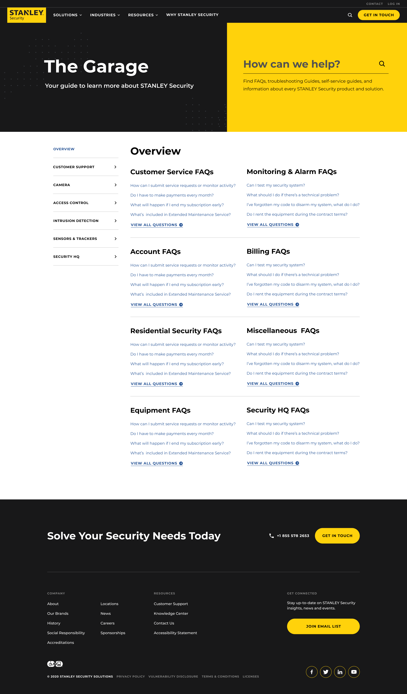

Hello, I am Stanley Digital Assistant, what can I do for you today?
Type a question or click on a popular topic below. To see these later, type "popular topics".
{"options": [
{
"text": "Request Service"
},
{
"text": "Upgrade System"
},
{
"text": "System Test"
},
{
"text": "Edit Call List"
}
],"type": "chips"}